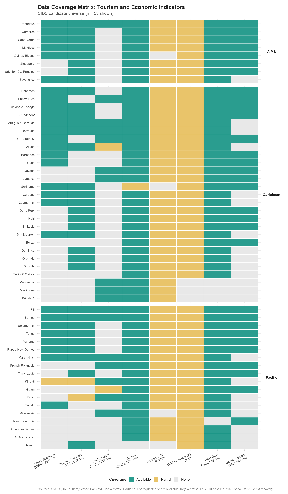
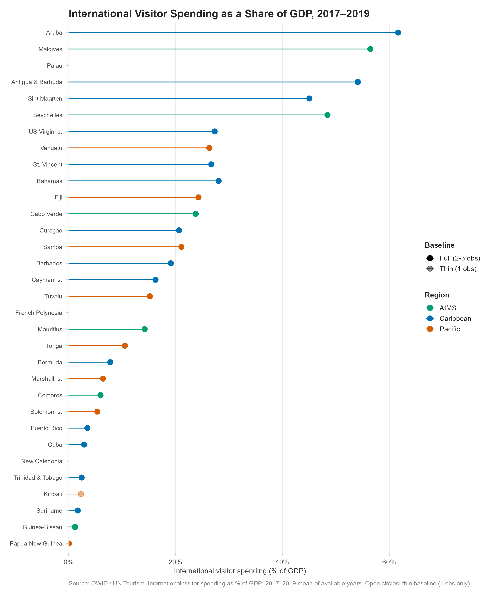
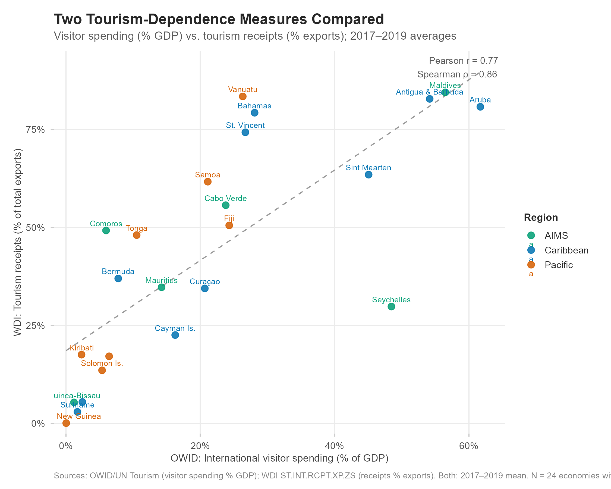
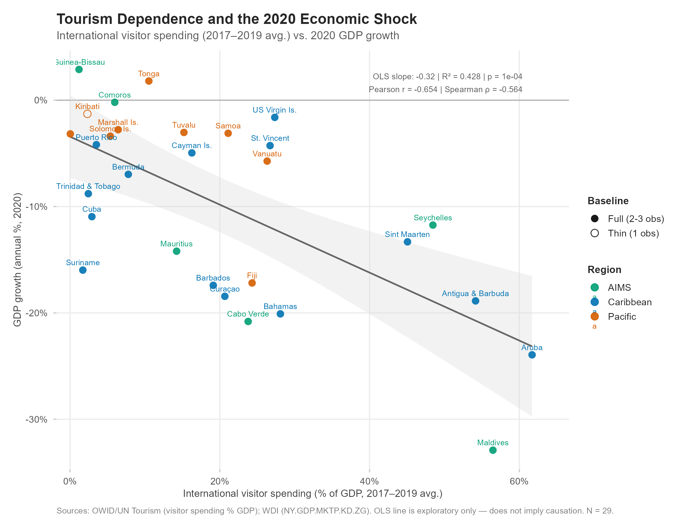

| ISO3 | Economy | Region | SIDS Status | Political Status | Notes |
|---|---|---|---|---|---|
| CPV | Cabo Verde | AIMS | UN Member SIDS | Sovereign state | Atlantic |
| COM | Comoros | AIMS | UN Member SIDS | Sovereign state | Indian Ocean; LDC |
| GNB | Guinea-Bissau | AIMS | UN Member SIDS | Sovereign state | Atlantic; LDC |
| MDV | Maldives | AIMS | UN Member SIDS | Sovereign state | Indian Ocean |
| MUS | Mauritius | AIMS | UN Member SIDS | Sovereign state | Indian Ocean |
| SYC | Seychelles | AIMS | UN Member SIDS | Sovereign state | Indian Ocean |
| SGP | Singapore | AIMS | UN Member SIDS | Sovereign state | South China Sea |
| STP | São Tomé and Príncipe | AIMS | UN Member SIDS | Sovereign state | Atlantic |
| AIA | Anguilla | Caribbean | Associate Member SIDS | Territory/Dependency | British Overseas Territory |
| ABW | Aruba | Caribbean | Associate Member SIDS | Territory/Dependency | Constituent country, Kingdom of the Netherlands |
| BMU | Bermuda | Caribbean | Associate Member SIDS | Territory/Dependency | British Overseas Territory |
| VGB | British Virgin Islands | Caribbean | Associate Member SIDS | Territory/Dependency | British Overseas Territory |
| CYM | Cayman Islands | Caribbean | Associate Member SIDS | Territory/Dependency | British Overseas Territory |
| CUW | Curaçao | Caribbean | Associate Member SIDS | Territory/Dependency | Constituent country, Kingdom of the Netherlands |
| GLP | Guadeloupe | Caribbean | Associate Member SIDS | Territory/Dependency | French overseas department |
| MTQ | Martinique | Caribbean | Associate Member SIDS | Territory/Dependency | French overseas department |
| MSR | Montserrat | Caribbean | Associate Member SIDS | Territory/Dependency | British Overseas Territory |
| PRI | Puerto Rico | Caribbean | Associate Member SIDS | Territory/Dependency | US Commonwealth territory |
| SXM | Sint Maarten | Caribbean | Associate Member SIDS | Territory/Dependency | Constituent country, Kingdom of the Netherlands |
| TCA | Turks and Caicos Islands | Caribbean | Associate Member SIDS | Territory/Dependency | British Overseas Territory |
| VIR | US Virgin Islands | Caribbean | Associate Member SIDS | Territory/Dependency | US unincorporated territory |
| BES | Bonaire, Sint Eustatius and Saba | Caribbean | Other island economy | Territory/Dependency | Dutch special municipalities; not on UN SIDS list |
| ATG | Antigua and Barbuda | Caribbean | UN Member SIDS | Sovereign state | NA |
| BHS | Bahamas | Caribbean | UN Member SIDS | Sovereign state | NA |
| BRB | Barbados | Caribbean | UN Member SIDS | Sovereign state | NA |
| BLZ | Belize | Caribbean | UN Member SIDS | Sovereign state | NA |
| CUB | Cuba | Caribbean | UN Member SIDS | Sovereign state | NA |
| DMA | Dominica | Caribbean | UN Member SIDS | Sovereign state | NA |
| DOM | Dominican Republic | Caribbean | UN Member SIDS | Sovereign state | NA |
| GRD | Grenada | Caribbean | UN Member SIDS | Sovereign state | NA |
| GUY | Guyana | Caribbean | UN Member SIDS | Sovereign state | NA |
| HTI | Haiti | Caribbean | UN Member SIDS | Sovereign state | LDC |
| JAM | Jamaica | Caribbean | UN Member SIDS | Sovereign state | NA |
| KNA | Saint Kitts and Nevis | Caribbean | UN Member SIDS | Sovereign state | NA |
| LCA | Saint Lucia | Caribbean | UN Member SIDS | Sovereign state | NA |
| VCT | Saint Vincent and the Grenadines | Caribbean | UN Member SIDS | Sovereign state | NA |
| SUR | Suriname | Caribbean | UN Member SIDS | Sovereign state | NA |
| TTO | Trinidad and Tobago | Caribbean | UN Member SIDS | Sovereign state | NA |
| ASM | American Samoa | Pacific | Associate Member SIDS | Territory/Dependency | US unincorporated territory |
| PYF | French Polynesia | Pacific | Associate Member SIDS | Territory/Dependency | French overseas collectivity |
| GUM | Guam | Pacific | Associate Member SIDS | Territory/Dependency | US unincorporated territory |
| NCL | New Caledonia | Pacific | Associate Member SIDS | Territory/Dependency | French special collectivity |
| MNP | Northern Mariana Islands | Pacific | Associate Member SIDS | Territory/Dependency | US Commonwealth territory; listed as Commonwealth of Northern Marianas |
| COK | Cook Islands | Pacific | UN Member SIDS | Sovereign state | Free association with New Zealand |
| FJI | Fiji | Pacific | UN Member SIDS | Sovereign state | NA |
| KIR | Kiribati | Pacific | UN Member SIDS | Sovereign state | LDC |
| MHL | Marshall Islands | Pacific | UN Member SIDS | Sovereign state | NA |
| FSM | Micronesia (Fed. Sts.) | Pacific | UN Member SIDS | Sovereign state | NA |
| NRU | Nauru | Pacific | UN Member SIDS | Sovereign state | NA |
| NIU | Niue | Pacific | UN Member SIDS | Sovereign state | Free association with New Zealand |
| PLW | Palau | Pacific | UN Member SIDS | Sovereign state | NA |
| PNG | Papua New Guinea | Pacific | UN Member SIDS | Sovereign state | NA |
| WSM | Samoa | Pacific | UN Member SIDS | Sovereign state | NA |
| SLB | Solomon Islands | Pacific | UN Member SIDS | Sovereign state | LDC |
| TLS | Timor-Leste | Pacific | UN Member SIDS | Sovereign state | LDC; classified with Pacific SIDS by UN |
| TON | Tonga | Pacific | UN Member SIDS | Sovereign state | NA |
| TUV | Tuvalu | Pacific | UN Member SIDS | Sovereign state | LDC |
| VUT | Vanuatu | Pacific | UN Member SIDS | Sovereign state | NA |
Tourism Dependence and the COVID Cliff
Data Feasibility Audit and Preliminary EDA
Overview
This document reports the Phase 1 data feasibility audit for Island Time, Interrupted: Tourism Dependence and the COVID Cliff.
Working research question: Were Caribbean, Pacific, and AIMS small island developing states with greater pre-pandemic dependence on international tourism more vulnerable to the economic shock of COVID-19? Which economies had recovered to pre-pandemic levels of real economic output by 2022–2023?
Data Sources
Three OWID datasets (downloaded locally) and six World Bank WDI indicators (retrieved via wbstats) form the foundation of this analysis.
| Dataset | Indicator | Units | Source | Years |
|---|---|---|---|---|
| OWID Visitor Spending | Spending by international visitors as share of GDP | % of GDP | UN Tourism; WB national accounts — processed by OWID | 1995–2024 |
| OWID Tourism GDP | Tourism contribution to GDP (SDG 8.9.1) | % of GDP | UN Tourism (TSA methodology) — processed by OWID | 2008–2023 |
| OWID Tourist Arrivals | International tourist arrivals | Count | UN Tourism — processed by OWID | 1995–2024 |
| WDI Tourism Receipts | International tourism receipts | % of total exports | World Bank WDI (ST.INT.RCPT.XP.ZS) |
1995–2023 |
| WDI GDP growth | GDP growth, annual % | % | World Bank WDI (NY.GDP.MKTP.KD.ZG) |
2008–2023 |
| WDI GDP (real) | GDP, constant 2015 USD | USD | World Bank WDI (NY.GDP.MKTP.KD) |
2008–2023 |
| WDI GDP/capita (real) | GDP per capita, constant 2015 USD | USD | World Bank WDI (NY.GDP.PCAP.KD) |
2008–2023 |
| WDI GDP/capita (nominal) | GDP per capita, current USD | USD | World Bank WDI (NY.GDP.PCAP.CD) |
2008–2023 |
| WDI Unemployment | Unemployment, % of labor force | % | World Bank WDI (SL.UEM.TOTL.ZS) |
2008–2023 |
Key indicator distinctions:
- OWID visitor spending (% GDP): Total international tourism receipts — money received by the destination country from foreign visitors — expressed as a percentage of GDP. Source: UN Tourism statistics and World Bank national accounts. This indicator does not correspond to a single WDI code; the numerator is from UN Tourism and the denominator from WB national accounts.
- WDI tourism receipts (% exports): International tourism receipts as a fraction of total export earnings. Uses the same receipts data as the OWID indicator above but normalizes by total exports rather than GDP.
- OWID tourism GDP (% GDP): Tourism direct GDP — domestic value added directly attributable to tourism. Derived from Tourism Satellite Account (TSA) methodology. Conceptually distinct from visitor spending: a dollar spent by a visitor does not equal a dollar of domestic value added.
- Tourist arrivals: Volume measure, not a dependence indicator.
Candidate Universe
Universe summary
| sids_region | UN Member SIDS | Associate Member SIDS | Other island economy |
|---|---|---|---|
| AIMS | 8 | 0 | 0 |
| Caribbean | 16 | 13 | 1 |
| Pacific | 15 | 5 | 0 |
Data Coverage Audit
| ISO3 | Economy | Region | Status | V.Spend 2017-19 |
Receipts 2017-19 |
TourGDP 2017-19 |
Arrivals 2017-19 |
GDPgrowth 2020 |
RealGDP (key yrs) |
Primary shock |
Recovery sample |
|---|---|---|---|---|---|---|---|---|---|---|---|
| CPV | Cabo Verde | AIMS | UN Member SIDS | 3 | 3 | 0 | 3 | 1 | 4 | TRUE | TRUE |
| COM | Comoros | AIMS | UN Member SIDS | 3 | 3 | 0 | 3 | 1 | 4 | TRUE | TRUE |
| GNB | Guinea-Bissau | AIMS | UN Member SIDS | 3 | 3 | 0 | 3 | 1 | 4 | TRUE | TRUE |
| MDV | Maldives | AIMS | UN Member SIDS | 3 | 3 | 0 | 3 | 1 | 4 | TRUE | TRUE |
| MUS | Mauritius | AIMS | UN Member SIDS | 3 | 3 | 3 | 3 | 1 | 4 | TRUE | TRUE |
| SYC | Seychelles | AIMS | UN Member SIDS | 3 | 3 | 0 | 3 | 1 | 4 | TRUE | TRUE |
| SGP | Singapore | AIMS | UN Member SIDS | 0 | 2 | 0 | 3 | 1 | 4 | FALSE | FALSE |
| STP | São Tomé and Príncipe | AIMS | UN Member SIDS | 0 | 2 | 0 | 3 | 1 | 4 | FALSE | FALSE |
| AIA | Anguilla | Caribbean | Associate Member SIDS | 0 | 0 | 0 | 3 | 0 | 0 | FALSE | FALSE |
| ABW | Aruba | Caribbean | Associate Member SIDS | 3 | 3 | 1 | 3 | 1 | 4 | TRUE | TRUE |
| BMU | Bermuda | Caribbean | Associate Member SIDS | 3 | 3 | 3 | 3 | 1 | 4 | TRUE | TRUE |
| VGB | British Virgin Islands | Caribbean | Associate Member SIDS | 0 | 0 | 2 | 3 | 0 | 0 | FALSE | FALSE |
| CYM | Cayman Islands | Caribbean | Associate Member SIDS | 3 | 3 | 0 | 3 | 1 | 4 | TRUE | TRUE |
| CUW | Curaçao | Caribbean | Associate Member SIDS | 3 | 3 | 0 | 3 | 1 | 4 | TRUE | TRUE |
| GLP | Guadeloupe | Caribbean | Associate Member SIDS | 0 | 0 | 0 | 2 | 0 | 0 | FALSE | FALSE |
| MTQ | Martinique | Caribbean | Associate Member SIDS | 0 | 0 | 3 | 3 | 0 | 0 | FALSE | FALSE |
| MSR | Montserrat | Caribbean | Associate Member SIDS | 0 | 0 | 3 | 3 | 0 | 0 | FALSE | FALSE |
| PRI | Puerto Rico | Caribbean | Associate Member SIDS | 3 | 0 | 3 | 3 | 1 | 4 | TRUE | TRUE |
| SXM | Sint Maarten | Caribbean | Associate Member SIDS | 3 | 3 | 0 | 3 | 1 | 4 | TRUE | TRUE |
| TCA | Turks and Caicos Islands | Caribbean | Associate Member SIDS | 0 | 0 | 0 | 3 | 1 | 4 | FALSE | FALSE |
| VIR | US Virgin Islands | Caribbean | Associate Member SIDS | 3 | 0 | 3 | 3 | 1 | 3 | TRUE | TRUE |
| BES | Bonaire, Sint Eustatius and Saba | Caribbean | Other island economy | 0 | 0 | 0 | 0 | 0 | 0 | FALSE | FALSE |
| ATG | Antigua and Barbuda | Caribbean | UN Member SIDS | 3 | 3 | 3 | 3 | 1 | 4 | TRUE | TRUE |
| BHS | Bahamas | Caribbean | UN Member SIDS | 3 | 3 | 0 | 3 | 1 | 4 | TRUE | TRUE |
| BRB | Barbados | Caribbean | UN Member SIDS | 3 | 0 | 0 | 3 | 1 | 4 | TRUE | TRUE |
| BLZ | Belize | Caribbean | UN Member SIDS | 0 | 0 | 0 | 3 | 1 | 4 | FALSE | FALSE |
| CUB | Cuba | Caribbean | UN Member SIDS | 3 | 0 | 0 | 3 | 1 | 4 | TRUE | TRUE |
| DMA | Dominica | Caribbean | UN Member SIDS | 0 | 2 | 0 | 3 | 1 | 4 | FALSE | FALSE |
| DOM | Dominican Republic | Caribbean | UN Member SIDS | 0 | 2 | 0 | 3 | 1 | 4 | FALSE | FALSE |
| GRD | Grenada | Caribbean | UN Member SIDS | 0 | 2 | 0 | 3 | 1 | 4 | FALSE | FALSE |
| GUY | Guyana | Caribbean | UN Member SIDS | 0 | 0 | 3 | 3 | 1 | 4 | FALSE | FALSE |
| HTI | Haiti | Caribbean | UN Member SIDS | 0 | 2 | 0 | 3 | 1 | 4 | FALSE | FALSE |
| JAM | Jamaica | Caribbean | UN Member SIDS | 0 | 0 | 3 | 3 | 1 | 4 | FALSE | FALSE |
| KNA | Saint Kitts and Nevis | Caribbean | UN Member SIDS | 0 | 2 | 0 | 3 | 1 | 4 | FALSE | FALSE |
| LCA | Saint Lucia | Caribbean | UN Member SIDS | 0 | 2 | 0 | 3 | 1 | 4 | FALSE | FALSE |
| VCT | Saint Vincent and the Grenadines | Caribbean | UN Member SIDS | 3 | 3 | 0 | 3 | 1 | 4 | TRUE | TRUE |
| SUR | Suriname | Caribbean | UN Member SIDS | 3 | 3 | 0 | 1 | 1 | 4 | TRUE | TRUE |
| TTO | Trinidad and Tobago | Caribbean | UN Member SIDS | 3 | 3 | 0 | 3 | 1 | 4 | TRUE | TRUE |
| ASM | American Samoa | Pacific | Associate Member SIDS | 0 | 0 | 0 | 3 | 1 | 3 | FALSE | FALSE |
| PYF | French Polynesia | Pacific | Associate Member SIDS | 0 | 0 | 2 | 3 | 1 | 4 | FALSE | FALSE |
| GUM | Guam | Pacific | Associate Member SIDS | 0 | 0 | 1 | 3 | 1 | 3 | FALSE | FALSE |
| NCL | New Caledonia | Pacific | Associate Member SIDS | 0 | 0 | 0 | 3 | 1 | 0 | FALSE | FALSE |
| MNP | Northern Mariana Islands | Pacific | Associate Member SIDS | 0 | 0 | 0 | 3 | 1 | 3 | FALSE | FALSE |
| COK | Cook Islands | Pacific | UN Member SIDS | 0 | 0 | 0 | 3 | 0 | 0 | FALSE | FALSE |
| FJI | Fiji | Pacific | UN Member SIDS | 3 | 3 | 3 | 3 | 1 | 4 | TRUE | TRUE |
| KIR | Kiribati | Pacific | UN Member SIDS | 1 | 1 | 3 | 3 | 1 | 4 | TRUE | TRUE |
| MHL | Marshall Islands | Pacific | UN Member SIDS | 3 | 2 | 3 | 3 | 1 | 4 | TRUE | TRUE |
| FSM | Micronesia (Fed. Sts.) | Pacific | UN Member SIDS | 0 | 0 | 2 | 2 | 1 | 4 | FALSE | FALSE |
| NRU | Nauru | Pacific | UN Member SIDS | 0 | 2 | 0 | 0 | 1 | 4 | FALSE | FALSE |
| NIU | Niue | Pacific | UN Member SIDS | 0 | 0 | 0 | 3 | 0 | 0 | FALSE | FALSE |
| PLW | Palau | Pacific | UN Member SIDS | 0 | 1 | 3 | 3 | 1 | 4 | FALSE | FALSE |
| PNG | Papua New Guinea | Pacific | UN Member SIDS | 3 | 2 | 0 | 3 | 1 | 4 | TRUE | TRUE |
| WSM | Samoa | Pacific | UN Member SIDS | 3 | 3 | 3 | 3 | 1 | 4 | TRUE | TRUE |
| SLB | Solomon Islands | Pacific | UN Member SIDS | 3 | 3 | 0 | 3 | 1 | 4 | TRUE | TRUE |
| TLS | Timor-Leste | Pacific | UN Member SIDS | 0 | 2 | 0 | 3 | 1 | 4 | FALSE | FALSE |
| TON | Tonga | Pacific | UN Member SIDS | 3 | 3 | 0 | 3 | 1 | 4 | TRUE | TRUE |
| TUV | Tuvalu | Pacific | UN Member SIDS | 3 | 0 | 0 | 3 | 1 | 4 | TRUE | TRUE |
| VUT | Vanuatu | Pacific | UN Member SIDS | 3 | 3 | 0 | 3 | 1 | 4 | TRUE | TRUE |
Sample counts
| Sample | Definition | N |
|---|---|---|
| Candidate universe | All economies in the expanded candidate list | 58 |
| Tourism-data sample | Any usable tourism-dependence indicator (2017-2019) | 48 |
| — OWID visitor spending (% GDP, primary) | Primary indicator baseline available | 29 |
| — WDI receipts (% exports, complementary) | Complementary indicator baseline available | 35 |
| — OWID tourism GDP (% GDP) | TSA-based indicator baseline available | 19 |
| Primary shock sample | OWID vspend baseline + 2020 GDP growth (primary analysis) | 29 |
| — Receipts-based shock sample (sensitivity) | WDI receipts baseline + 2020 GDP growth | 35 |
| Recovery sample | Primary shock-eligible + real GDP data (2019, 2020, 2022 or 2023) | 29 |
| sids_region | Candidate universe | Tourism-data sample | Primary shock sample | Recovery sample |
|---|---|---|---|---|
| AIMS | 8 | 8 | 6 | 6 |
| Caribbean | 30 | 25 | 14 | 14 |
| Pacific | 20 | 15 | 9 | 9 |
| sids_status | Candidate universe | Tourism-data sample | Primary shock sample | Recovery sample |
|---|---|---|---|---|
| Associate Member SIDS | 18 | 12 | 7 | 7 |
| Other island economy | 1 | 0 | 0 | 0 |
| UN Member SIDS | 39 | 36 | 22 | 22 |
Thin baselines
Economies with only one pre-pandemic observation for a tourism indicator. Flagged in all figures with open circles.
| ISO3 | Economy | Region | V.Spend (n) | Receipts (n) | TourGDP (n) |
|---|---|---|---|---|---|
| ABW | Aruba | Caribbean | 3 | 3 | 1 |
| KIR | Kiribati | Pacific | 1 | 1 | 3 |
| PLW | Palau | Pacific | 0 | 1 | 3 |
| GUM | Guam | Pacific | 0 | 0 | 1 |
Coverage Visualization

Tourism-Dependence Rankings
Primary measure: OWID international visitor spending (% GDP)
The OWID visitor spending as a share of GDP indicator is the primary tourism-dependence measure for this analysis. It directly measures the scale of inbound international visitor spending relative to the size of the economy, which is precisely what we need to assess economic exposure.
This indicator is not equivalent to a single World Bank WDI code. Its numerator (international tourism receipts) comes from UN Tourism statistics; its denominator (GDP) comes from World Bank national accounts. Do not attribute it to ST.INT.XPND.GD.ZS or any other unverified WDI code.

Measure comparison
The WDI tourism receipts (% exports) and OWID visitor spending (% GDP) are related but distinct. They use the same underlying receipts data but normalize by different denominators — total exports vs. GDP — producing different rankings and values. Tourism direct GDP (OWID) measures domestic value added and is conceptually distinct from both receipts measures.

Tourism Dependence and the 2020 Shock

| Statistic | Value |
|---|---|
| Primary shock sample (N) | 29 |
| Visitor spending mean (2017-19 avg.) | 20% |
| Visitor spending range | 0% – 61.7% |
| 2020 GDP growth mean | -9.8% |
| 2020 GDP growth range | -32.9% – 2.9% |
| OLS slope (vspend → GDP growth) | -0.32 |
| R² | 0.428 |
| p-value (slope) | 1.2e-04 |
| Pearson r | -0.654 |
| Spearman ρ | -0.564 |
Sensitivity check: Excluding the one thin-baseline economy (Kiribati) changes the slope from −0.320 to −0.314 and R² from 0.428 to 0.412 (n=28), confirming the result is not driven by the thin baseline.
Complementary analysis (WDI receipts, n=35): OLS slope = −0.116, R² = 0.097, p = 0.069. The WDI receipts measure shows a weaker, marginal association, partly because it covers a larger sample including economies where the two indicators diverge.
Real GDP Recovery Data
| ISO3 | Economy | Region | Real GDP 2019 | Real GDP 2020 | Real GDP 2022 | Real GDP 2023 |
|---|---|---|---|---|---|---|
| CPV | Cabo Verde | AIMS | 2,116.0 | 1,675.8 | 2,077.8 | 2,177.4 |
| COM | Comoros | AIMS | 1,092.8 | 1,090.7 | 1,140.3 | 1,176.6 |
| GNB | Guinea-Bissau | AIMS | 1,389.8 | 1,430.0 | 1,583.7 | 1,657.0 |
| MDV | Maldives | AIMS | 5,460.1 | 3,663.3 | 5,733.7 | 6,017.1 |
| MUS | Mauritius | AIMS | 14,066.8 | 12,069.7 | 13,513.1 | 14,148.1 |
| SYC | Seychelles | AIMS | 1,901.9 | 1,678.6 | 1,854.7 | 1,950.7 |
| SGP | Singapore | AIMS | 348,524.1 | 335,939.4 | 384,845.6 | 390,426.9 |
| STP | São Tomé and Príncipe | AIMS | 303.2 | 311.1 | 317.6 | 318.7 |
| ATG | Antigua and Barbuda | Caribbean | 1,692.5 | 1,373.2 | 1,611.6 | 1,673.9 |
| ABW | Aruba | Caribbean | 3,243.4 | 2,466.9 | 3,133.3 | 3,431.5 |
| BHS | Bahamas | Caribbean | 12,281.4 | 9,814.1 | 12,795.3 | 13,185.4 |
| BRB | Barbados | Caribbean | 5,817.5 | 4,804.9 | 6,017.9 | 6,127.0 |
| BMU | Bermuda | Caribbean | 6,840.9 | 6,363.9 | 7,084.3 | 7,391.4 |
| CYM | Cayman Islands | Caribbean | 5,434.3 | 5,165.0 | 5,723.1 | 6,055.3 |
| CUB | Cuba | Caribbean | 91,020.4 | 81,054.1 | 83,527.4 | 81,915.9 |
| CUW | Curaçao | Caribbean | 2,830.9 | 2,308.9 | 2,571.6 | 2,679.7 |
| DMA | Dominica | Caribbean | 585.4 | 493.5 | 574.1 | 595.1 |
| DOM | Dominican Republic | Caribbean | 88,427.5 | 81,416.0 | 97,686.5 | 99,828.0 |
| GRD | Grenada | Caribbean | 1,134.9 | 978.8 | 1,099.7 | 1,149.5 |
| HTI | Haiti | Caribbean | 15,485.3 | 14,973.4 | 14,456.8 | 14,187.4 |
| PRI | Puerto Rico | Caribbean | 96,389.4 | 92,359.4 | 95,456.9 | 96,155.2 |
| KNA | Saint Kitts and Nevis | Caribbean | 1,046.9 | 886.7 | 983.3 | 1,013.0 |
| LCA | Saint Lucia | Caribbean | 1,968.1 | 1,517.4 | 2,012.8 | 2,091.5 |
| VCT | Saint Vincent and the Grenadines | Caribbean | 864.0 | 827.1 | 870.7 | 917.1 |
| SXM | Sint Maarten | Caribbean | 1,368.2 | 1,186.0 | 1,412.7 | 1,466.3 |
| SUR | Suriname | Caribbean | 5,256.4 | 4,416.7 | 4,412.8 | 4,519.5 |
| TTO | Trinidad and Tobago | Caribbean | 23,495.1 | 21,430.2 | 21,459.8 | 21,774.5 |
| VIR | US Virgin Islands | Caribbean | 3,873.1 | 3,810.6 | 3,898.5 | NA |
| FJI | Fiji | Pacific | 5,215.9 | 4,319.7 | 4,865.1 | 5,324.5 |
| KIR | Kiribati | Pacific | 227.3 | 224.4 | 255.7 | 263.8 |
| MHL | Marshall Islands | Pacific | 227.2 | 220.9 | 224.1 | 212.0 |
| NRU | Nauru | Pacific | 89.1 | 90.5 | 97.5 | 96.8 |
| PLW | Palau | Pacific | 277.8 | 261.1 | 228.9 | 231.7 |
| PNG | Papua New Guinea | Pacific | 24,719.8 | 23,936.8 | 25,173.7 | 26,132.9 |
| WSM | Samoa | Pacific | 936.9 | 907.8 | 881.5 | 1,015.8 |
| SLB | Solomon Islands | Pacific | 1,487.7 | 1,437.4 | 1,397.0 | 1,436.7 |
| TLS | Timor-Leste | Pacific | 1,960.8 | 2,582.9 | 2,163.1 | 1,770.8 |
| TON | Tonga | Pacific | 482.5 | 491.2 | 476.3 | 489.5 |
| TUV | Tuvalu | Pacific | 45.7 | 44.4 | 39.5 | 40.9 |
| VUT | Vanuatu | Pacific | 978.0 | 922.0 | 962.3 | 1,018.4 |
Real GDP at constant 2015 prices (NY.GDP.MKTP.KD) is the primary recovery measure. It is unaffected by inflation and exchange-rate movements, making it comparable across years. GDP per capita at constant prices (NY.GDP.PCAP.KD) is the complementary per-person measure.
Feasibility Findings and Recommendations
Is the project viable?
Yes. The expanded candidate universe of 58 economies provides a primary shock sample of 29 economies (N=29) with both a visitor-spending baseline and 2020 GDP growth data. The exploratory regression produces a strong, significant association: slope = −0.32, R² = 0.428, p < 0.001. The research question is analytically tractable.
Recommended country sample
Primary shock sample (N=29): Economies with OWID visitor spending (2017–2019) and 2020 GDP growth. These form the core analysis sample.
Recovery sample (N=29): The primary shock sample also has real GDP data, enabling recovery analysis through 2022–2023.
Include with caution: Kiribati (thin vspend baseline: 1 observation). The sensitivity analysis confirms results are stable when Kiribati is excluded.
Excluded from primary analysis (no tourism baseline): Anguilla, Belize, Bonaire, Cook Islands, Guadeloupe, Martinique, New Caledonia, Niue, Northern Mariana Islands, Turks and Caicos, American Samoa. Document exclusion reasons.
Primary tourism-dependence measure
OWID international visitor spending (% GDP) is the primary measure.
Rationale: - Directly measures the economic exposure question: how much did foreign visitors contribute to each economy relative to its size? - Better coverage across the expanded universe (29 in primary shock sample) than the receipts-based measure (35) at a comparable sample composition - The OWID visitor spending vs. WDI receipts measures are highly correlated (Pearson r=0.768, Spearman ρ=0.863) but not interchangeable - The vspend-based regression (R²=0.428) produces a substantially stronger signal than the receipts-based regression (R²=0.097)
WDI tourism receipts (% exports) is used as a complementary measure and sensitivity check.
OWID tourism direct GDP is a distinct measure of domestic value-added dependence; it requires TSA methodology and has worse coverage.
Most significant data limitations
- Seven economies not in WDI: AIA, GLP, MTQ, MSR, BES, COK, NIU lack World Bank coverage entirely. Their tourism characteristics are undocumented in this analysis.
- Thin baselines: Kiribati (vspend n=1), Palau and Guam (receipts n=1). Flag in all figures.
- Singapore: Technically an AIMS UN Member SIDS; economically atypical (high-income, diversified). Its inclusion or exclusion as an outlier should be discussed explicitly.
- Cuba, Dominican Republic: Caribbean UN SIDS with WDI coverage but no vspend baseline — they appear in the receipts-based sample but not the primary vspend sample.
- OWID visitor spending source: Not a single WDI indicator. The OWID methodology note confirms the numerator is from UN Tourism statistics; do not attribute to
ST.INT.XPND.GD.ZS.
Recommended next steps (Phase 2)
- Finalize the analytical sample: primary shock sample (N=29), excluding economies with no justifiable inclusion
- Build the recovery analysis using real GDP and real GDP per capita
- Produce small-multiple line charts for recovery trajectories
- Consider Singapore’s outlier status — may warrant exclusion from the dependence ranking with explicit discussion
- Add visual annotations identifying the most exposed and most resilient economies
Analysis conducted using R 4.4.1. Data retrieved November 02, 2026.